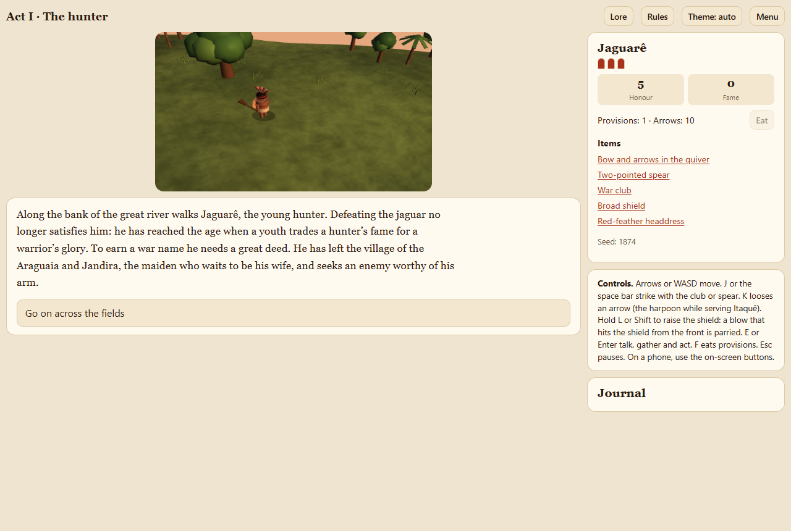
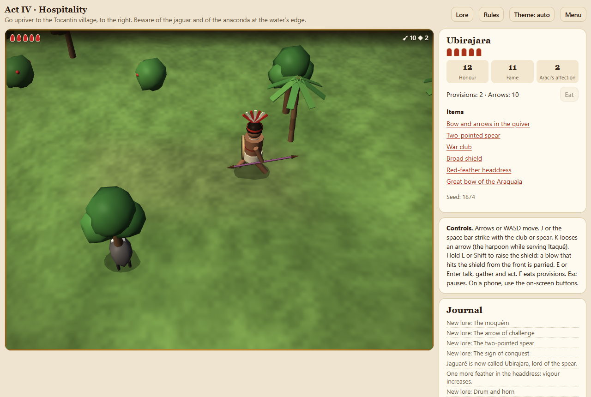
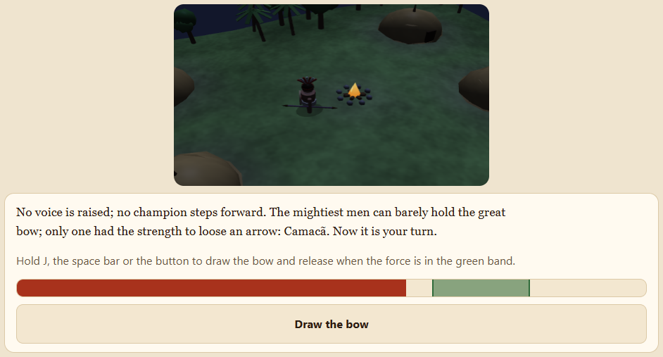

O jogo
Em Ubirajara você é Jaguarê, jovem caçador da nação araguaia, que precisa de uma grande façanha para ganhar um nome de guerra. É uma aventura de ação em 3D, vista do alto: a história avança em quadros de texto que seguem os nove capítulos do romance, e entre eles você joga fases em tempo real, com caça, travessias, trabalhos e duelos. [1] [2]

O romance
Ubirajara é um romance indianista de José de Alencar, publicado em 1874. [3] Alencar, nascido em Fortaleza em 1829 e morto em 1877, é considerado o principal escritor do Romantismo no Brasil. [4] Forma uma trilogia com O Guarani, de 1857, e Iracema, de 1865. [5] [6] Na advertência, o autor o chama de “irmão de Iracema” e de lenda, como o outro. [2] A Wikipédia o descreve como o “primeiro termo” da tríade, porque a história se passa antes da chegada dos europeus. [3]
Na introdução, Alencar explica o nome: Ubirajara quer dizer “senhor da lança”, e uma nação com esse nome é citada por Gabriel Soares no Roteiro do Brasil, famosa pela lança de duas pontas. [2] O indianismo foi a idealização do indígena como herói nacional, uma marca do Romantismo brasileiro. [7] O livro idealiza os povos que retrata, e o jogo avisa isso nas regras.
| Capítulo e ato | O que acontece no romance | O que você joga |
|---|---|---|
| I · O caçador | Jaguarê encontra Araci, filha de Itaquê, vence o guerreiro tocantim Pojucã e se proclama Ubirajara, o senhor da lança. | caça nos campos, corrida, a seta do desafio, dois duelos |
| II · O guerreiro | Na festa da vitória, recebe o grande arco do pai, Camacã. | prova de força no arco |
| III · A noiva | Jandira, a noiva prometida na taba araguaia. | escolhas |
| IV · A hospitalidade | Vai como hóspede à taba dos tocantins, com o nome de Jurandir. | subida do rio |
| V · Servo do amor | Serve Itaquê, que é cego, para merecer Araci. | trabalhos |
| VI · O combate nupcial | Disputa Araci com os pretendentes nas provas. | duelo com Cori, corrida do toro, camucim das saúvas |
| VII · A guerra | Descobre que Pojucã é filho de Itaquê; as nações vão à guerra. | escolhas |
| VIII · A batalha | Araguaias e tocantins se enfrentam. | escolhas |
| IX · A união dos arcos | Os tapuias de Agniná, irmão de Canicrã, atacam; as duas nações se unem sob Ubirajara. | o arco de Itaquê e a batalha contra Agniná |
Os resumos vêm do texto do romance no Wikisource. [2] Episódios em que mulheres são dadas ou disputadas pelos guerreiros são narrados como estão no livro, sem passar a decisão ao jogador.
↑ Voltar ao topoA tela
No alto ficam o ato, o objetivo da fase e os botões Saberes, Regras, Tema e Menu. Nos quadros de texto, a imagem é uma maquete 3D do lugar, com a luz da hora da cena. Nas fases, ela vira a área de jogo, com a câmera seguindo o herói.

- Penas do cocar: são a vida. Cada pena vale dois golpes leves; meia pena aparece pela metade. Você começa com 3 penas, e três façanhas dão uma pena a mais: a vitória sobre Pojucã, o grande arco e a conquista de Araci.
- Flechas e provisão: ➶ é o número de flechas; ◆ é a provisão. Comer uma provisão (F) devolve uma pena e meia; um fruto, uma pena.
- Barra do chefe: nos duelos, a barra vermelha no alto mostra a força do adversário.
- Ficha: à direita, Honra, Fama, Afeto de Araci, os objetos, a semente e, no ato V, a lista de trabalhos. O Diário guarda o que aconteceu.
Controles
| Ação | Teclado | Celular |
|---|---|---|
| Mover | setas ou WASD | cruz de direções |
| Golpe de tacape ou de lança | J ou barra de espaço | J |
| Flecha (no ato V, o arpéu) | K | K |
| Escudo, enquanto segurar | L ou Shift | L |
| Falar, colher, agir | E ou Enter | E |
| Comer a provisão | F | F |
| Pausa | Esc ou P | — |
Os botões na tela aparecem em aparelhos de toque. O escudo só apara o que vem de frente: vire-se para o adversário antes de erguê-lo. Nas provas de empurrar e de vergar o arco, vale a barra de espaço, J ou o botão grande na tela; na prova de resistir, as setas ou os botões de seta.
↑ Voltar ao topoComo ler um duelo
Os chefes se defendem fora da hora certa: um golpe dado na hora errada só solta faíscas. Cada um segue um padrão, e o anel amarelo no chão avisa que o ataque vem aí.
![Dois padrões de ataque, com os tempos do código do jogo. Tacape, de Pojucã no primeiro duelo e de Cori: ele se aproxima, ergue a arma por 0,5 segundo (Cori 0,75), golpeia, e fica 0,8 segundo se recompondo: essa é a janela para golpear; o escudo erguido de frente apara o golpe, e Cori aparado vacila 1,6 segundo. Bote, de Pojucã com a lança e de Agniná: ele se prepara por 0,7 segundo, investe em linha reta; se o bote bate no escudo de frente, ele vacila 1,6 segundo, a melhor janela; se erra, fica 0,9 segundo se recompondo. Um anel amarelo no chão marca a preparação.](rc_images/UbirajaraDuelo.svg)
- Pojucã, no primeiro duelo: só recebe golpe enquanto se recompõe. Três golpes partem os tacapes; se você resistir aos 45 segundos, os tacapes também se partem.
- Pojucã, com a lança: você está sem arma. Apare o bote com o escudo e, quando ele vacilar, aperte J para girar a lança.
- Cori: aparado, vacila. Se você escolher lutar sem o tacape, apare o golpe e aperte J para arrancar o dele.
- Agniná: investe como Pojucã, cercado de chefes e arqueiros tapuias. O escudo também apara as flechas.
As fases
| Fase | Objetivo | Dica |
|---|---|---|
| Campos (I) | Caçar se quiser e soltar o grito de guerra (E) junto à grande emburana. | O veado vira provisão; os arbustos dão frutos (E). |
| Corrida (I) | Correr atrás de Araci por 8 segundos. | Como no romance, ninguém a alcança: a história segue de qualquer jeito. |
| A seta (I) | Acertar a faixa amarela atrás de Araci, sem feri-la, com 4 flechas (K). | Atire um pouco à frente: ela corre de lado. |
| Pojucã I e II (I) | Vencer o guerreiro tocantim. | Veja Como ler um duelo. |
| Rio (IV) | Subir o rio até a taba dos tocantins, à direita. | A onça e a sucuri ficam na beira d’água. |
| Serviço (V) | Fazer ao menos 3 dos 4 trabalhos e falar com Itaquê (E). | O arpéu não gasta flechas. |
| Cori (VI) | Vencer Cori, já cansado. | Escudo quando ele erguer o tacape. |
| O toro (VI) | Levar o tronco até o carbeto dos anciões, à direita. | Na estacada, arremesse o toro por cima (K) e salte atrás dele. |
| Agniná (IX) | Vencer Agniná e os chefes tapuias. | Derrube os arqueiros quando Agniná estiver se recompondo. |
Os quatro trabalhos do serviço são arpoar os manatis, segurar a anta, fazer 4 matumbos na roça e banhar-se no rio perto de Araci. Se você cair numa fase de caminho, tenta de novo com as penas cheias. Perder um duelo decisivo leva a um final; aí você pode recomeçar o ato.
↑ Voltar ao topoAs provas
Algumas cenas são provas de habilidade, jogadas no próprio quadro de texto.

| Prova | Onde | Como vencer |
|---|---|---|
| Empurrar | os tacapes presos, no ato I | 18 toques ou mais em 4 segundos (J, espaço ou o botão). |
| Vergar o arco | o grande arco (II) e o arco de Itaquê (IX) | Segure e solte com a força na faixa verde. A faixa fica mais larga com a Fama, até um limite, e na dificuldade Narrativa. |
| Resistir | o camucim das saúvas, no ato VI | Aperte a seta mostrada em até 1,7 segundo; 3 acertos em 4 rodadas. |
Errar o arco não encerra a jornada: você perde um pouco de vigor e tenta de novo, com a faixa mais larga.
↑ Voltar ao topoEscolhas e finais
As escolhas mudam três números da ficha. A Honra, que começa em 5, sobe quando você respeita as leis dos guerreiros e da hospitalidade. A Fama vem das façanhas. O Afeto de Araci vem do modo como você a trata.
![Os nove atos do jogo seguem os capítulos do romance. Ato I, O caçador: caça nos campos, corrida atrás de Araci, a seta do desafio e os dois duelos com Pojucã; perder um duelo leva ao final Cativo de Pojucã. Ato II, O guerreiro: o grande arco dos araguaias. Ato III, A noiva. Ato IV, A hospitalidade: a subida do rio. Ato V, Servo do amor: os trabalhos para Itaquê. Ato VI, O combate nupcial: Cori, o toro, o camucim das saúvas; se a soma de afeto de Araci, mérito e metade do serviço ficar abaixo de 9, o final é A virgem não escolheu. Ato VII, A guerra: levar Araci de noite leva ao final A traição. Ato VIII, A batalha. Ato IX, A união dos arcos: com honra abaixo de 5, o final é Sem honra, sem união; perder para Agniná leva a A queda do herói; vencer leva a A lenda de Ubirajara.](rc_images/UbirajaraJornada.svg)
- A prova da virgem (ato VI): Araci escolhe se Afeto + mérito nas provas + metade do serviço somar 9 ou mais.
- O arco de Itaquê (ato IX): sem Honra 5 ou mais, as nações não se unem.
- O que tira Honra: atacar Pojucã de surpresa (−3), entrar calado na taba (−1), manter Pojucã cativo para o combate de morte (−2), aceitar a aliança de Canicrã (−3) e disparar contra o menino (−4).
O jogo guarda um ponto de retorno no começo de cada ato. Num final triste, Recomeçar este ato volta a esse ponto.
↑ Voltar ao topoSaberes e fontes
Ao longo da jornada você desbloqueia 22 saberes sobre armas, comidas e costumes, como o moquém, a rede, o urucum e o jenipapo. O botão Saberes os reúne, cada um com a fonte: o capítulo do romance e, quando há, o verbete da Wikipédia em português.
Quando o romance e as fontes divergem, o saber diz isso. O cauim de Alencar é tirado “do caju e do ananás”, [2] enquanto o verbete descreve cauim de mandioca ou de milho. [8] E “inúbia” é um nome dado pelos poetas, que não aparece nos cronistas coloniais nem no vocabulário tupi dos jesuítas. [9]
↑ Voltar ao topoPrimeira jornada passo a passo
A semente fixa os mapas e onde surgem os animais. Siga estes passos com a semente 1874 e a dificuldade Guerreiro.
- Abra o jogo, escolha o idioma, deixe Guerreiro em Dificuldade, digite
1874em Semente (opcional) e clique em Nova jornada. - Leia o começo do capítulo I e clique em Seguir pelos campos. Depois clique em Começar.
- Nos campos, cace um veado com o golpe (J) ou com uma flecha (K) e pegue a carne. Ande até a grande emburana, a árvore maior, e aperte E para soltar o grito de guerra.
- Quando Araci aparecer, escolha “Venho como hóspede, virgem dos tocantins.” (+1 de Afeto). Clique em Correr atrás dela e em Correr com toda a força. A corrida dura 8 segundos e ela escapa, como no livro.
- Clique em Tomar o arco e em Começar. Acerte a faixa amarela com K. Se acertar, ganha +2 de Afeto e +1 de Fama.
- Em Ouvir seu nome, escolha desafiar os guerreiros. Diante de Pojucã, escolha Disparar uma seta no ar, mensageira do desafio (+1 de Honra) e responda às bravatas.
- No primeiro duelo, fique de frente para Pojucã. Quando o anel amarelo aparecer, segure L; logo depois do golpe, solte L e aperte J. Três golpes bastam.
- Na prova dos tacapes, aperte a barra de espaço o mais rápido que puder por 4 segundos.
- Clique em Aceitar a proposta de Pojucã: correr até a lança e em Correr. Sem arma, apare o bote com L e aperte J quando ele vacilar. A vitória dá uma pena a mais no cocar, e Jaguarê se proclama Ubirajara.
- Na festa, escolha um canto e ouça Camacã. No grande arco, segure a barra de espaço e solte na faixa verde. O arco dá outra pena.
Daqui em diante, siga os capítulos. Coma a provisão (F) quando tiver menos de duas penas, guarde flechas para a onça e, no ato V, faça os quatro trabalhos para somar serviço.
↑ Voltar ao topoErros comuns
Golpear Pojucã sem parar
Fora da janela, ele apara tudo. Espere o golpe dele e bata enquanto ele se recompõe.
Erguer o escudo de costas
O escudo só apara o que vem de frente. Vire-se para o adversário antes de segurar L.
Tentar alcançar Araci na corrida
Ela sempre escapa, como no romance. A corrida leva à prova da seta.
Escolher só pela Fama
Sem Honra 5 no fim, as nações não se unem, por maior que seja a Fama.
Pular os trabalhos do ato V
O serviço entra na conta da prova da virgem. Três trabalhos encerram a fase, mas o quarto ainda soma.
Para fixar
- A vida são as penas do cocar; provisão (F) devolve uma pena e meia.
- Anel amarelo: vire-se, segure o escudo e golpeie logo depois.
- Araci escolhe com Afeto + mérito + metade do serviço ≥ 9.
- Itaquê entrega o arco só com Honra 5 ou mais.
- Num final triste, recomece o ato.
Revisão rápida
Tente responder antes de abrir cada pergunta.
1. O que quer dizer o nome Ubirajara?
“Senhor da lança”, segundo a introdução de Alencar.
2. Quando dá para acertar Pojucã no primeiro duelo?
Só enquanto ele se recompõe, nos 0,8 segundo depois do golpe dele. Antes disso, ele apara.
3. O que o anel amarelo no chão avisa?
Que o adversário está se preparando para atacar. É a hora de se virar para ele e segurar o escudo.
4. Você chegou ao ato IX com Honra 4. O que acontece?
Itaquê não entrega o arco e as nações não se unem: o final é Sem honra, sem união. Recomece o ato ou uma jornada nova com escolhas mais honradas.
5. Qual a diferença entre o cauim do romance e o do verbete?
Alencar o tira do caju e do ananás; o verbete da Wikipédia descreve cauim de mandioca ou de milho.
Referências
- Giovani Perotto Mesquita, “Ubirajara”, jogo em um único arquivo HTML, giovanipm.github.io/Ubirajara.html. As regras, os tempos dos duelos, as condições dos finais e a contagem de 22 saberes vêm do código do jogo.
- José de Alencar, Ubirajara: lenda tupi (1874), texto no Wikisource, acesso em 22/11/2026, pt.wikisource.org/wiki/Ubirajara. As notas do autor no fim do livro não estão transcritas nessa edição e não foram usadas.
- Wikipédia, “Ubirajara (livro)”, acesso em 22/11/2026, pt.wikipedia.org/wiki/Ubirajara_(livro).
- Wikipédia, “José de Alencar”, acesso em 22/11/2026, pt.wikipedia.org/wiki/José_de_Alencar.
- Wikipédia, “Iracema”, acesso em 22/11/2026, pt.wikipedia.org/wiki/Iracema.
- Wikipédia, “O Guarani”, acesso em 22/11/2026, pt.wikipedia.org/wiki/O_Guarani.
- Wikipédia, “Indianismo”, acesso em 22/11/2026, pt.wikipedia.org/wiki/Indianismo.
- Wikipédia, “Cauim”, acesso em 22/11/2026, pt.wikipedia.org/wiki/Cauim.
- Wikipédia, “Inúbia”, acesso em 22/11/2026, pt.wikipedia.org/wiki/Inúbia.


![Two attack patterns, with the timings from the game code. Club, used by Pojucã in the first duel and by Cori: he approaches, raises the weapon for 0.5 seconds (Cori 0.75), strikes, and spends 0.8 seconds recovering: that is the window to strike; a shield raised facing him parries the blow, and a parried Cori staggers for 1.6 seconds. Lunge, used by Pojucã with the spear and by Agniná: he gets ready for 0.7 seconds and charges in a straight line; if the lunge hits the shield from the front he staggers for 1.6 seconds, the best window; if he misses he spends 0.9 seconds recovering. A yellow ring on the ground marks the wind-up.](rc_images/UbirajaraDuelo-en.svg)


![The nine acts of the game follow the chapters of the novel. Act I, The hunter: hunting in the fields, the chase after Araci, the challenge arrow and the two duels with Pojucã; losing a duel leads to the ending Captive of Pojucã. Act II, The warrior: the great bow of the Araguaia. Act III, The bride. Act IV, Hospitality: the trip up the river. Act V, Servant of love: the tasks for Itaquê. Act VI, The wedding contest: Cori, the log, the jar of ants; if Araci’s affection plus merit plus half of service is below 9, the ending is The maiden did not choose. Act VII, The war: taking Araci at night leads to the ending Betrayal. Act VIII, The battle. Act IX, The union of the bows: with honour below 5 the ending is No honour, no union; losing to Agniná leads to The fall of the hero; winning leads to The legend of Ubirajara.](rc_images/UbirajaraJornada-en.svg)
![Due schemi di attacco, con i tempi del codice del gioco. Tacape, di Pojucã nel primo duello e di Cori: si avvicina, alza l’arma per 0,5 secondi (Cori 0,75), colpisce e resta 0,8 secondi a ricomporsi: è la finestra per colpire; lo scudo alzato di fronte para il colpo, e Cori parato vacilla per 1,6 secondi. Affondo, di Pojucã con la lancia e di Agniná: si prepara per 0,7 secondi e carica in linea retta; se l’affondo colpisce lo scudo di fronte vacilla per 1,6 secondi, la finestra migliore; se manca resta 0,9 secondi a ricomporsi. Un anello giallo a terra segna la preparazione.](rc_images/UbirajaraDuelo-it.svg)
![I nove atti del gioco seguono i capitoli del romanzo. Atto I, Il cacciatore: caccia nei campi, la corsa dietro ad Araci, la freccia della sfida e i due duelli con Pojucã; perdere un duello porta al finale Prigioniero di Pojucã. Atto II, Il guerriero: il grande arco degli araguaia. Atto III, La promessa sposa. Atto IV, L’ospitalità: la risalita del fiume. Atto V, Servo dell’amore: i lavori per Itaquê. Atto VI, Il combattimento nuziale: Cori, il tronco, il vaso delle formiche; se la somma di affetto di Araci, merito e metà del servizio resta sotto 9, il finale è La vergine non ha scelto. Atto VII, La guerra: portare via Araci di notte porta al finale Il tradimento. Atto VIII, La battaglia. Atto IX, L’unione degli archi: con onore sotto 5 il finale è Senza onore, senza unione; perdere contro Agniná porta a La caduta dell’eroe; vincere porta a La leggenda di Ubirajara.](rc_images/UbirajaraJornada-it.svg)

![Dos patrones de ataque, con los tiempos del código del juego. Tacape, de Pojucã en el primer duelo y de Cori: se acerca, levanta el arma durante 0,5 segundos (Cori 0,75), golpea y queda 0,8 segundos recomponiéndose: esa es la ventana para golpear; el escudo levantado de frente para el golpe, y Cori parado vacila 1,6 segundos. Embestida, de Pojucã con la lanza y de Agniná: se prepara durante 0,7 segundos y embiste en línea recta; si la embestida da en el escudo de frente vacila 1,6 segundos, la mejor ventana; si falla queda 0,9 segundos recomponiéndose. Un anillo amarillo en el suelo marca la preparación.](rc_images/UbirajaraDuelo-es.svg)
![Los nueve actos del juego siguen los capítulos de la novela. Acto I, El cazador: caza en los campos, la carrera tras Araci, la flecha del desafío y los dos duelos con Pojucã; perder un duelo lleva al final Cautivo de Pojucã. Acto II, El guerrero: el gran arco de los araguaias. Acto III, La novia. Acto IV, La hospitalidad: la subida del río. Acto V, Siervo del amor: los trabajos para Itaquê. Acto VI, El combate nupcial: Cori, el tronco, el cántaro de hormigas; si la suma de afecto de Araci, mérito y la mitad del servicio queda por debajo de 9, el final es La virgen no eligió. Acto VII, La guerra: llevarse a Araci de noche lleva al final La traición. Acto VIII, La batalla. Acto IX, La unión de los arcos: con honor por debajo de 5 el final es Sin honor, sin unión; perder ante Agniná lleva a La caída del héroe; vencer lleva a La leyenda de Ubirajara.](rc_images/UbirajaraJornada-es.svg)